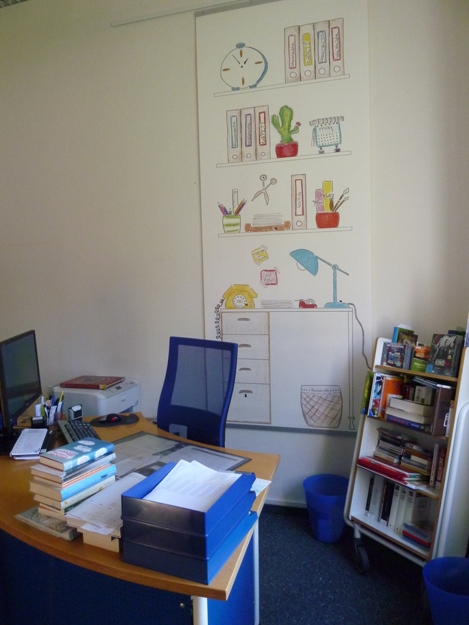
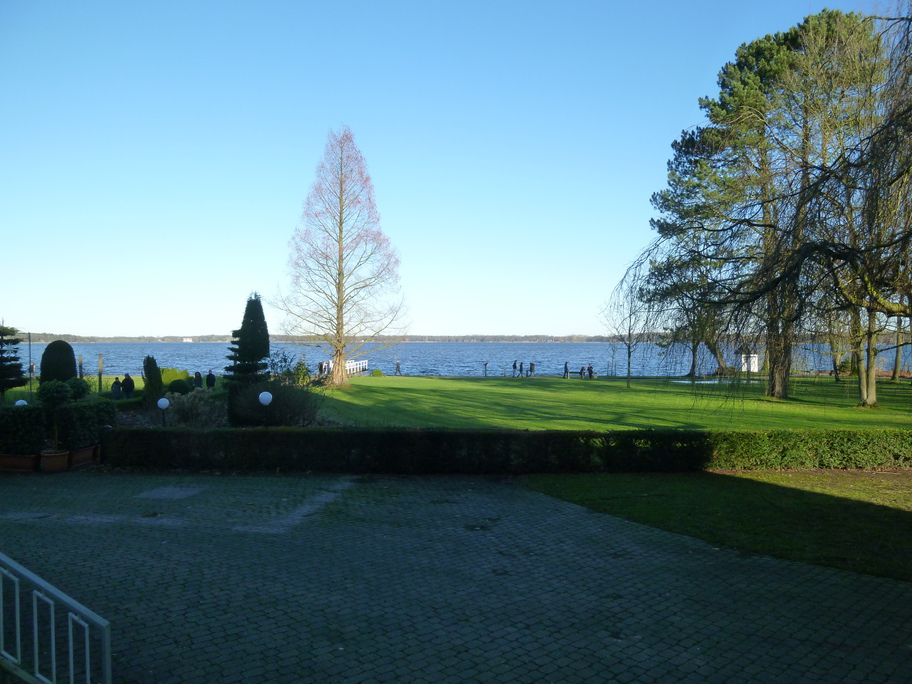
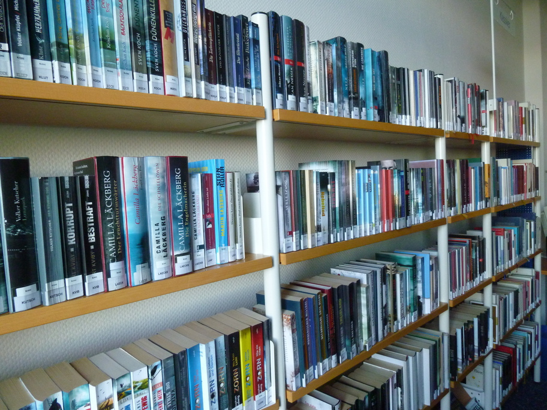
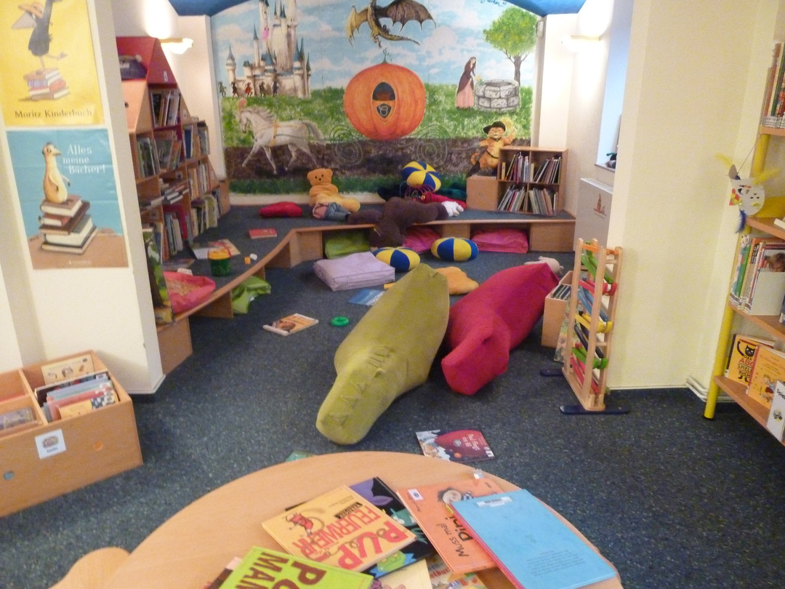
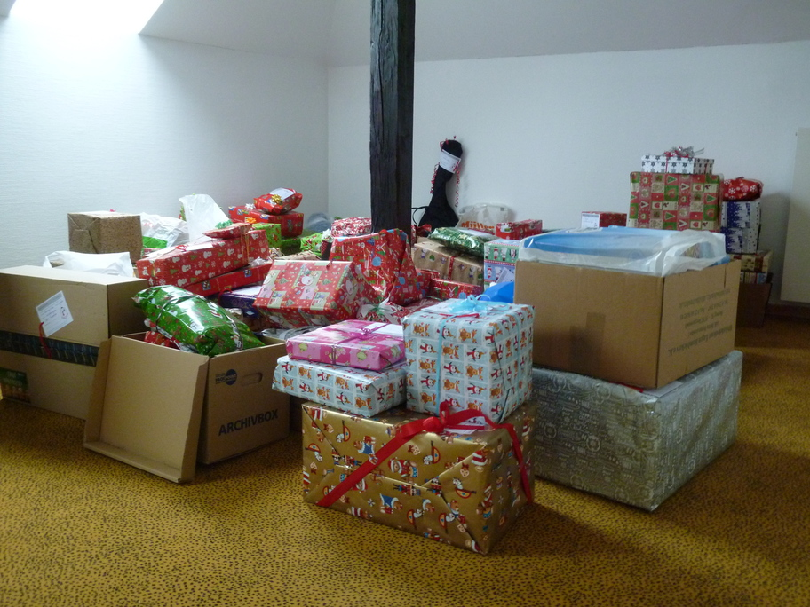

Zeigen Sie uns den Ort in Ihrer Bibliothek, an dem Sie die meiste Zeit verbringen. Was ist das für ein Ort? Wieso sind Sie die meiste Zeit dort?

Es ist eigentlich der Auskunftsplatz, aber hier laufen alle Fäden zusammen und man hat aus dem Hintergrund heraus einen guten Überblick über den Bibliotheksbetrieb. Ganz nach dem Motto: Sehen und gesehen werden.
Was würden Sie vermissen, wenn es nicht mehr da wäre? Wieso würden Sie es vermissen?

Die Lage am Zwischenahner Meer war ein Grund für den Bibliotheksnamen bibliothek am meer
und ohne diese Aussicht wäre die Aufenthaltsqualität nur halb so gut.
Was stört Sie an Ihrer Bibliothek beziehungsweise was würden Sie gerne verbessern? Wieso stört Sie das jetzt (noch)?

Ein chronischer Platzmangel herrscht wohl in jeder Bibliothek. Der tägliche Spagat zwischen maximalem Angebot und ansprechender Präsentation der Titel gelingt nicht immer.
Zeigen Sie uns Spuren der Bibliotheksnutzung. Gibt es dazu eine Geschichte?

Das Ergebnis eines ganz normalen Samstagvormittags. Immer wieder schön, wenn die Bilderbuchecke in der Kinderbibliothek auch ordentlich bespielt wird.
Was haben Sie, was die anderen nicht haben? Warum haben Sie das? Sollten andere es auch in ihren Bibliotheken haben?

Mitte Dezember darf sich das Team der Bibliothek immer ein wenig wie der Weihnachtsmann fühlen. Wir unterstützen aktiv das Projekt Wunschbaum
des Vereins Glücksbringer am Meer
. Vielleicht auch eine Form sozialer Bibliotheksarbeit.
Ihre Bibliothek (Name, Adresse, Spezialisierung, was man noch über sie wissen sollte)?
bibliothek am meer
, Auf dem Hohen Ufer 20, 26160 Bad Zwischenahn, Bibliothek mit Qualität und Siegel der Büchereizentrale Niedersachsen
Diana Wolf, Leiterin der Bibliothek